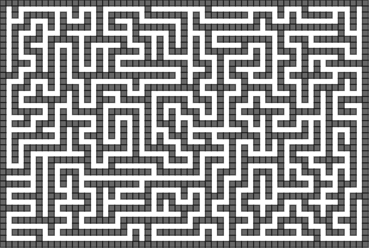
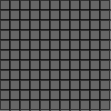
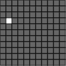
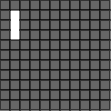
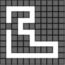
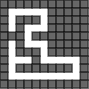
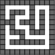

実行例

実行結果を見る
ソースコード
TypeScript
app.ts
解説/アルゴリズム

サイズが奇数 × 奇数の二次元配列を用意する。
配列をすべて壁で埋めておく。

ランダムな偶数位置の XY 座標を選び、そこを通路にする。

上下左右いずれかの方向の 2 マス先が壁ならそこまで通路して掘り進める。

掘り進めた先で同じように上記処理をさせ、この処理ができなくなるまで繰り返す。

2 マス前の位置まで戻り、別の方向の 2 マス先が掘れるなら、その方向を掘り進める。

上記処理を繰り返すことで迷路が完成する。